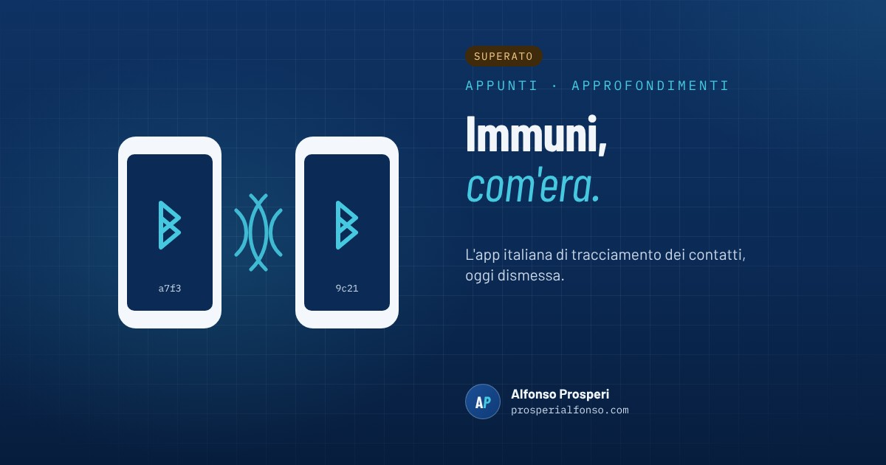

Immuni: cos'era e perché si consigliava di scaricarla. Ecco le sue caratteristiche e le sue funzioni.
Immuni era l'app ufficiale italiana creata per aiutare a contenere la pandemia di Covid-19. Grazie al tracciamento dei contatti, in caso di positività permetteva di avvisare in modo anonimo le persone con cui si era stati a stretto contatto nei giorni precedenti, riducendo così il rischio di altri contagi.
Al contrario, l'app poteva inviare una notifica se si era stati per almeno 15 minuti a breve distanza da una persona risultata positiva.
La privacy
- L'app non raccoglieva dati che permettessero di risalire all'identità: non chiedeva nome, cognome, data di nascita, indirizzo, numero di telefono o email.
- Gli spostamenti non erano tracciati: l'app non usava dati di geolocalizzazione.
- I codici casuali che i telefoni si scambiavano tramite Bluetooth non contenevano informazioni sul dispositivo o sulla persona, e cambiavano più volte ogni ora.
- I dati salvati e le connessioni tra l'app e il server erano cifrati.
La batteria
Il consumo era basso, perché Immuni usava il Bluetooth Low Energy, una tecnologia pensata per consumare poco.
All'epoca poteva essere uno strumento utile per contenere la diffusione della pandemia. L'app permetteva anche di scaricare il Green Pass.